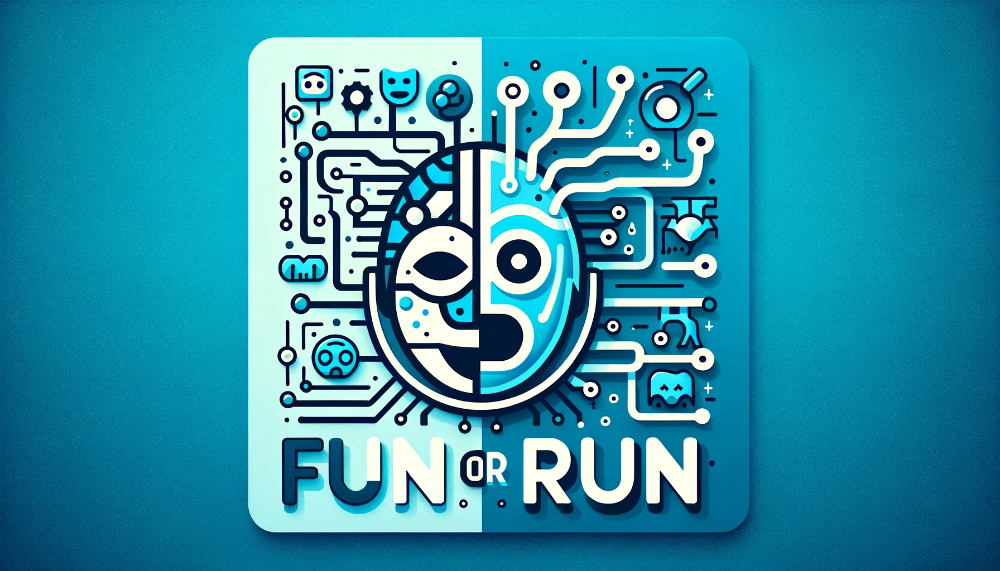

Welcome to my latest adventure in the world of data science! I’ve recently started watching Jeremy Howard’s amazing lecture series on deep learning, Practical Deep Learning for Coders, and I’ve been feeling very inspired by Jeremy to play around with deep learning and simply try things.
For my first deep learning project, I decided to create an image classifier, since Jermey had several examples on these, and I eventually landed on the idea of a movie poster classifier! My goals with this project are to:
Learn about deep learning
Build a model that “successfully” classifies movies as a Comedy or Horror movies
Deploy my model online in an interactive format
The Challenge: Horror or Comedy?
For the first iteration of “Fun or RUN”, I set out to build a deep learning model that predicts whether a movie is a horror or a comedy movie based on its poster. I gathered around 150 images for each category using Jeremy’s DuckDuckGo image function. However, I faced a challenge: the search results often included repeated movies, especially when breaking down my searches by decade. I’m considering implementing web scraping from IMDb for more varied and accurate data in the future, but the images I was able to gather so far are good enough to build the model.
from duckduckgo_search import ddg_images
def search_images(term, max_images=30):
print(f"Searching for '{term}'")
return L(ddg_images(term, max_results=max_images)).itemgot('image')
searches = 'horror','comedy'
path = Path('photos')
for o in searches:
dest = (path/o)
dest.mkdir(exist_ok=True, parents=True)
download_images(dest, urls=search_images(f'2020s {o} movie poster'))
sleep(15) # Pause between searches to avoid over-loading server
download_images(dest, urls=search_images(f'2010s {o} movie poster'))
sleep(15)
download_images(dest, urls=search_images(f'2000s {o} movie poster'))
sleep(15)
download_images(dest, urls=search_images(f'1990s {o} movie poster'))
sleep(15)
download_images(dest, urls=search_images(f'1980s {o} movie poster'))
sleep(15)
resize_images(path/o, max_size=400, dest=path/o)Training the Model: A Learning Experience
I chose resnet18, a timm model, as my learner for its simplicity and speed, as my primary goal was to understand the model-building process rather than achieving high accuracy. I know that there are likely even better models that make this trade-off, but I opted to make a quick selection of a good model rather than taking a lot of time to find the perfect model. I trained the resnet18 on a random split of the movie posters, with the folder names serving as the category labels. Post-training, I also used fastai’s ImageClassifierCleaner to refine the model, removing mislabeled images. This step helped with cleaning faulty images from the DuckDuckGo search.
dls = DataBlock(
blocks=(ImageBlock, CategoryBlock),
get_items=get_image_files,
splitter=RandomSplitter(valid_pct=0.2),
get_y=parent_label,
item_tfms=[Resize(192, method='squish')]
).dataloaders(path, bs=32)# Training the model:
learn = vision_learner(dls, resnet18, metrics=error_rate)
# Finetuning the nodel:
learn.fine_tune(5)Building an Gradio Interface:
After exporting the model, I then used Gradio to build an interface. I made a pretty basic interface with the ability to upload files, a couple pre-uploaded examples, and a display of the model’s predictions. Overall, it seems like the model does pretty well with stereotypical movie posters for both genres, but it struggles with less obvious examples, such as The Shinning or Disney’s Wish.
Here is the general structure of the Gradio Interface function:
demo = gr.Interface(fn, inputs, outputs)
# Additional items like examples, title, and a description can also be added
demo = gr.Interface(fn, inputs, outputs,
examples = my_examples_list,
title = "Super Cool Interface"
description = "I take in inputs and give you an output")After creating a function to take the input image and give a prediction, here was my interface:
## Interface Setup:
categories = ('Comedy 😂','Horror 👻')
def classify_image(img):
prediction,idx,probs = learn.predict(img)
return dict(zip(categories,map(float,probs)))
## Creating Interface:
examples = ['barbie.jpg','hangover.jpg','theshinning.jpg','freddy.jpg']
demo = gr.Interface(classify_image, gr.Image(), gr.Label(),
examples=examples,
title = "Fun or RUN",
description = "Image classifier that predicts a movie's genre based on the movie poster!",
theme = gr.themes.Base())
demo.launch()Try the AI Yourself!
Future Horizons: Expanding “Fun or RUN”
My journey doesn’t stop here! I’m planning to enhance the model’s accuracy, broaden its genre recognition capabilities, and upload it to Huggingface Spaces. My next step involves using web scraping to gather a more diverse and accurate collection of movie posters from IMDb, taking advantage of their extensive genre listings.
Wrapping Up
This project has been an incredible learning experience, blending my love for movies with my passion for data science. It’s fascinating to see how AI can interpret visual media, and I’m excited to see where this path leads. I encourage you to try out Fun or RUN and share your thoughts. Have you worked on a similar project? Let’s exchange ideas and learn from each other!